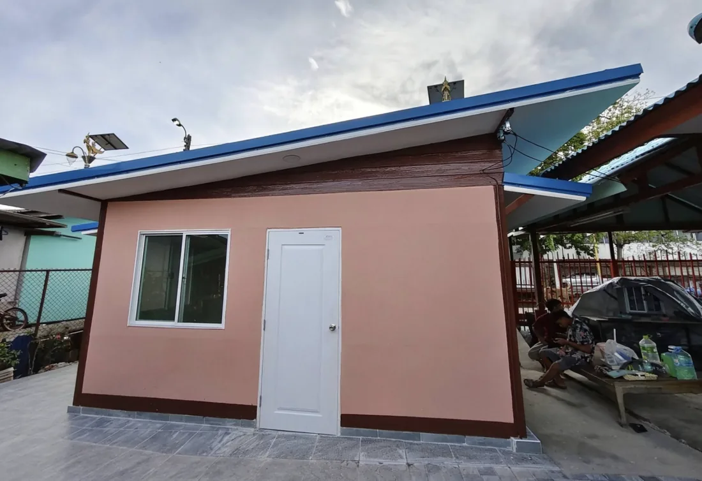

รับเหมาก่อสร้าง
รับเหมางานก่อสร้างบ้าน อาคาร และหอพัก ดูแลตั้งแต่โครงสร้างจนถึงงานเก็บรายละเอียด
ปรึกษา สอบถามฟรี
ต่อเติม ซ่อมแซมบ้าน งานประตู ฝ้าเพดาน กระเบื้อง หลังคา รั้วกำแพง และโครงสร้างเหล็กเมทัลชีท — ราคาย่อมเยา เชื่อถือได้ โดยช่างเจมส์
ให้บริการในกรุงเทพฯ และปริมณฑล

รับงานก่อสร้างทุกชนิด — บ้าน อาคาร หอพัก
บริการของเรา
รับเหมาก่อสร้าง ออกแบบและต่อเติมที่พักอาศัย ทั้งบ้าน อาคาร และหอพัก
รับเหมางานก่อสร้างบ้าน อาคาร และหอพัก ดูแลตั้งแต่โครงสร้างจนถึงงานเก็บรายละเอียด
ปรับปรุงบ้านเก่าให้เหมือนใหม่ ทั้งภายในและภายนอก ทาสี ปูกระเบื้อง เปลี่ยนฝ้า และงานเก็บงาน
ออกแบบและต่อเติมที่พักอาศัย เพิ่มพื้นที่ใช้สอย ห้องครัว ห้องน้ำ โรงจอดรถ และพื้นที่ต่อเติมอื่นๆ
งานหลังคา โครงสร้างเหล็ก และเมทัลชีท ทั้งหลังคาใหม่ ต่อเติมกันสาด และเปลี่ยนของเดิม
ติดตั้งฝ้าเพดาน ปูกระเบื้องพื้นและผนัง งานบัวเชิงผนัง พร้อมงานสีให้เรียบร้อย
งานรั้วและกำแพง งานเหล็กดัด งานสแตนเลส และงานช่างเชื่อมตามแบบที่ต้องการ
ผลงาน
งานรีโนเวทและต่อเติม ย่านกิ่งแก้ว บางพลี สมุทรปราการ — กดที่รูปเพื่อดูขนาดเต็ม
ขั้นตอนการทำงาน
โทรหรือแอดไลน์เข้ามาเล่าให้ฟังว่าอยากทำอะไร ปรึกษาและสอบถามได้ฟรี ไม่มีค่าใช้จ่าย
นัดเข้าไปดูหน้างานจริง วัดพื้นที่ และคุยรายละเอียดกับเจ้าของบ้านให้ตรงกัน
สรุปขอบเขตงานและเสนอราคาให้พิจารณา ปรับแก้ได้จนกว่าจะพอใจก่อนเริ่มงาน
ลงมือทำตามที่ตกลง อัปเดตความคืบหน้าให้ทราบ และเก็บรายละเอียดก่อนส่งมอบงาน
พื้นที่ให้บริการ
คำถามที่พบบ่อย
ปรึกษาและสอบถามฟรีครับ โทรหรือแอดไลน์เข้ามาคุยได้เลย บอกลักษณะงานและทำเลคร่าวๆ แล้วนัดเข้าไปดูหน้างานจริงเพื่อประเมินให้
รับครับ ตั้งแต่งานซ่อมแซมบ้าน งานประตู ฝ้าเพดาน กระเบื้อง ไปจนถึงงานรีโนเวทและงานก่อสร้างเต็มหลัง — รับงานก่อสร้างทุกชนิด
ราคาขึ้นอยู่กับขอบเขตงานและหน้างานจริง จึงต้องดูหน้างานก่อนถึงจะเสนอราคาได้ตรง ยืนยันได้ว่าราคาย่อมเยาและคุยกันได้ก่อนตัดสินใจ
กรุงเทพฯ และปริมณฑลครับ ผลงานที่ผ่านมามีทั้งย่านลาดพร้าว และกิ่งแก้ว บางพลี สมุทรปราการ พื้นที่อื่นสอบถามเข้ามาก่อนได้
โทร 095-935-0331 · LINE ID 0959350331 · หรือทักผ่านเพจเฟซบุ๊ก “รับเหมาก่อสร้าง รีโนเวทบ้าน” ได้เลยครับ
ติดต่อเรา
เลือกช่องทางที่สะดวก — โทรได้เลย หรือกรอกรายละเอียดงานแล้วส่งให้เราทางไลน์
ฐานงานอยู่กรุงเทพฯ วิ่งงานทั่วกรุงเทพฯ และปริมณฑล
เช่น ลาดพร้าว · กิ่งแก้ว · บางพลี สมุทรปราการ
กรอกข้อมูลแล้วกดปุ่มด้านล่าง ระบบจะรวมข้อความให้พร้อมส่ง — ไม่มีการเก็บข้อมูลไว้บนเว็บไซต์นี้
ปรึกษาและสอบถามฟรี ไม่มีค่าใช้จ่าย ราคาย่อมเยา เชื่อถือได้